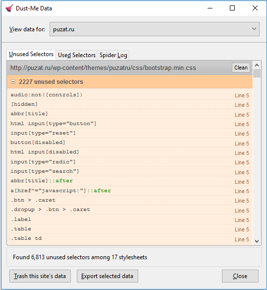

В наше быстрое время, большинство пользователей ожидает загрузку сайта в течение 3 секунд. Чем дольше будет загружаться сайт, тем больше будет отказов, тем меньше наша прибыль. Итак, рассмотрим, как без сложных телодвижений и бесплатно можно поднять свой ROI на ровном месте. Для анализа скорости загрузки я использую сервисы Google PageSpeed и GTmetrics. В последнем можно посмотреть время загрузки каждого модуля во вкладке waterfall.
Итак, вот небольшой чеклист того, как я увеличиваю скорость загрузки лендинга.
Проверка и удаление html тегов
При скачивании шаблона лендинга, зачастую, нам не нужны все элементы, которые находятся в этом шаблоне. Удаляйте все теги, которые не используете. После каждого удаления проверяйте, не поехал ли у вас сайт, и не захватили ли вы что-нибудь лишнее.
Удаление ненужных стилей
Устанавливаем расширение для firefox. Открываем нашу страницу через этот браузер. Запускаем сканирование и ручками удаляем ненужные стили. Да, это займет какое-то время, но таким способом можно уменьшить размер css файла на 70-80%. Если кто-то знает сервисы по автоматическому удалению ненужных стилей, то, пожалуйста, поделитесь. Выглядит это примерно так:

Минимизируем получившийся css
Я использую сервис csscompressor. В параметре compression level выбираю high, чтобы наш код был читаем. Таким образом можно сократить размер еще на треть.
Переносим css прямо в html
Чем больше запросов к серверу, тем больше грузится страница. Тем более я говорю в основном о мобильных лендингах и строк стилей там не так много и это не сильно повлияет на читаемость всего кода. В любом случае, эту операцию можно проделать в самом конце.
Работа с javascript
Удалите все неиспользуемые скрипты. Если вы не знаете, что они делают, удаляйте по одному и смотрите на изменения. Почти всегда я подключаю скрипты в самом конце файла, чтобы они не блокировали загрузку контента. Если говорить о самописных или небольших скриптах, то я так же включаю их в тело html файла, а сторонние библиотеки, такие как jquery подключаю через CDN, это важно. Так же можно использовать асинхронную загрузки скриптов. Подробнее об этом здесь
Работа с изображениями
Сжимаем изображения через tinypng.
Если у нас на странице есть большое изображение или вы хотите использовать хорошее и качественное изображение, но боитесь, что это сильно повлияет на скорость загрузки, то можно воспользоваться хаком, который применяют, например, в Medium или Facebook. Хак заключается в том, что мы делаем маленькую копию нашего изображения (фейсбук уменьшает изображение до 200 байт). Во время загрузки страницы мы подгружаем не большое изображение, а его маленькую копию, размытую по Гауссу. А большое изображение подгружаем в самом конце. Пример и рабочий код. Таким образом пользователь будет получать изображения до его полной загрузки. Статья про то, как это работает на фейсбуке.
Кодируем изображения в base64 с помощью этого сервиса. Это опять-таки нужно для уменьшения количества запросов к серверу. Делаем это в самом конце, потому что серьезно снизится уровень читаемости кода, особенно если вы решите перекодировать гифку.
Работа со шрифтами
Я очень редко использую сторонние шрифты, но если их необходимо использовать, то подключать нужно так же через CDN, например, от Google.
Используем GZIP
GZIP нужно для сжатия без потерь текстовых файлов на сайтах и последующего их восстановления. Этот метод сжатия может сократить весь лендинга на 70-80%. Чтобы установить GZIP для Apache нужно добавить в файл .htaccess следующие строки:
AddOutputFilterByType DEFLATE text/plain
AddOutputFilterByType DEFLATE text/html
AddOutputFilterByType DEFLATE text/xml
AddOutputFilterByType DEFLATE text/css
AddOutputFilterByType DEFLATE application/xml
AddOutputFilterByType DEFLATE application/xhtml+xml
AddOutputFilterByType DEFLATE application/rss+xml
AddOutputFilterByType DEFLATE application/javascript
AddOutputFilterByType DEFLATE application/x-javascript
Проверить, получилось ли сжатие, можно здесь
Заключение
Проведя эти нехитрые манипуляции, можно повысить скорость загрузки ваших лендингов, снизить показатель отказов и увеличить наш любимый ROI.
P.S.
Если вам понравилась статья, то поделитесь ей в социальной сети или скиньте в предложку какому-нибудь паблику или своему другу. Любые вопросы, предложения, пожелания пишите в телеграм @keros1n. Если вы испытваете проблемы при работе с кодом, так же пишите мне в телеграм за помощью.
P.P.S.
Да, я пренебрегаю этими правилами в этом блоге.